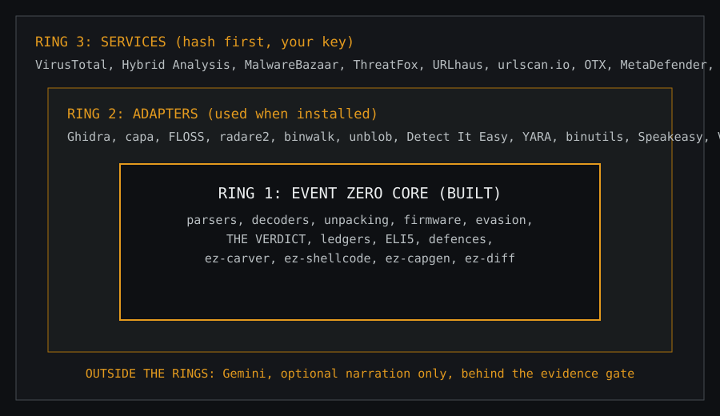

EVENT ZERO
Malware in. Plain English out. Evidence attached.
Event Zero turns a suspicious file into a plain English report anyone can act on, with every claim tied to evidence found in the file itself.
python3 -m event_zero verdict fake_malware
SECTION 01The Verdict: a proof-backed YES or NO on any file you download
Drop in a cracked game, a keygen, an installer, an archive, or a whole release folder. The Verdict takes it apart piece by piece and accounts for every byte as genuine program or explained crack. One headline comes back. Not a score. Not a probability.
YES: MALWARE FOUND, PROVEN
A behaviour chain was demonstrated: theft, a miner mining for someone else, persistence plus a remote host, antivirus tampering, or the scope test, which is the first behaviour a file does not need for its claimed job.
YES: MALWARE FOUND, UNACCOUNTED
Something could not be explained: an unexplained code region, an archive layer that would not open, a virtualized section. The accounting fails closed. Silence never becomes a pass.
NO: NO MALWARE, ACCOUNTED
Issued only when every byte is accounted for as genuine or explained crack, against a signature-valid original or a fully classified diff. The crack itself is never counted as malware: a patched licence check, a key generator, and KMS emulation sit in the accounting, not the proof.
SECTION 02The examination table
Real reports, generated by the tool and shipped with this page. Nothing here is a mock-up and nothing is uploaded: pick a case, switch layers, read the evidence. ELI5 is the plain summary, Plain is the technical summary, Evidence is the full record.
Loading the case file...
SECTION 03Capabilities, with their status
Status words are copied from the project capability matrix, which carries the test or run that proves each row. BUILT means in the core and test-proven. ADAPTER means used when you install the tool. SERVICE means an external hash lookup with your own key. HANDOFF means a link or a documented next step, never automation that is not there.
| Capability | Status |
|---|---|
| The Verdict: YES / NO accounting on pirated software | BUILT |
| ELF, PE, Mach-O parsing, imports explained, Capstone disassembly | BUILT |
| String decoding: ASCII, UTF-16, Base64, XOR, RC4, multi-layer chains | BUILT |
| Unpacking: UPX detection, overlay, embedded binary carving | BUILT |
| Firmware: magic scan, UEFI volumes, DXE driver carving | BUILT |
| Rootkit indicators for drivers, stated as indicators consistent with | BUILT |
| Evasion decoding: direct syscalls, API hashing, injection chains, anti-VM | BUILT |
| .NET, Android APK, Office, PDF, email, PCAP analysis | BUILT |
| ELI5 layer with jargon gate and reading metrics | BUILT |
| Folder manifest and connection ledger | BUILT |
| Devirtualization: protector ID, handler census, entry-stub trace | BUILT |
| Ghidra, capa, FLOSS, radare2, binwalk, unblob, Detect It Easy, YARA, Volatility, jadx, oletools, tshark | ADAPTER |
| VirusTotal, Hybrid Analysis, abuse.ch, urlscan, OTX, MetaDefender, filescan, tria.ge | SERVICE |
| Gemini narration behind the evidence gate (live call) | SERVICE |
| Rootkit confirmation via Volatility 3; sandbox detonation in your own CAPE; ANY.RUN, Joe Sandbox, Koodous, Intezer hash links | HANDOFF |
| Devirtualization: handler semantics pass (Triton, NoVmp class tools) | ADAPTER / HANDOFF |
SECTION 04Benchmark, with its method
Method: the same fixtures scored by the built-in capability rules alone, then by the full pipeline, as recorded in the project verification file. Five adversarial fixtures (S1 to S5) were built after the modules, with tricks the modules were not designed around. Two cold misses were found, fixed, and locked in as regression tests.
| Fixture | Rules only | Full pipeline |
|---|---|---|
| fake_malware (bundled sample) | 12 findings | 12 findings |
| EICAR test file | 0 | 0 |
| evil.py (synthetic) | 5 | 5 |
| S1 APK (XOR string hidden in DEX) | 1 | 2 |
| S2 DOCM (macro, DDE, template injection) | 3 | 4 |
| S3 blob (Base64, Base64, XOR chain) | 0 cold, 1 after fix | 1 |
| S4 .NET evasion (ConfuserEx, API hashing, injection) | 1 | 4 |
| S5 firmware (UEFI plus SquashFS plus nested DXE) | 0 | 1 |
Test suite: 91 tests passing at the v3 verification run. ELI5 sections measured 10.2 to 11.8 average words per sentence across six reports, with 0 untranslated banned jargon terms.
SECTION 05Three rings: core, adapters, services
Event Zero does not replace the tools in the outer rings. It fuses them into one evidence file, and credits each by name.

Ring 1: built in
Parsers, decoders, unpacking, firmware, rootkit indicators, evasion, verdict accounting, ledgers, ELI5, defences (YARA, Sigma style summary, IOC exports), and its own tools: ez-carver, ez-shellcode, ez-capgen, ez-diff.
Ring 2: adapters
Ghidra headless, capa, FLOSS, radare2, binwalk, unblob, Detect It Easy, YARA, binutils, Speakeasy, Unicorn, Volatility 3, jadx, oletools, tshark. Detected automatically, used when installed, absent gracefully.
Ring 3: services
VirusTotal, Hybrid Analysis, MalwareBazaar, ThreatFox, URLhaus, urlscan.io, OTX, MetaDefender, filescan.io, tria.ge. Hash first, keys from the environment only. Gemini sits outside the rings as the optional narration layer, behind the evidence gate.
SECTION 06Safety and honest limits
Samples are never executed on the host. Reports are built by reading bytes. Emulation services no syscalls. Detonation belongs in your own isolated CAPE sandbox.
Full decompilation of packed or virtualized code is not possible, for any tool. Event Zero censuses virtualized regions, traces what crosses into the real world, and marks the rest UNACCOUNTED rather than guessing.
A NO from The Verdict is an accounting claim, stated exactly: every byte accounted for as genuine or explained crack, no behaviour beyond genuine plus explained crack observed, manifest linked. Environment-keyed and server-gated payloads stay on the disclosed open list.
Zero-day is a disclosure status, not something a binary can certify. Exploit reports state the bug class and the primitive, and print disclosure status: unknown.
SECTION 07Get it
git clone https://github.com/Epsilon0xCell/Event_Zero.git && cd Event_Zero && pip install -r requirements.txt && python3 -m event_zero verdict fake_malwareRepository: github.com/Epsilon0xCell/Event_Zero. Every bundled fixture is synthetic and self-crafted. No live malware is included or downloaded.